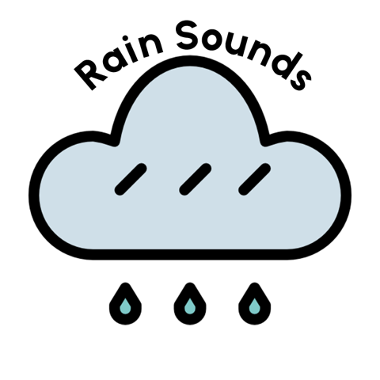

Welcome to Focus Pod!
Focus Pod is a one-stop web application to help you to keep track of your tasks and stay focused.
How to Use: |
 |
- Clicking on the arrow icon to the right of the To Do List heading will expand and contract the to do list feature.
- Add new tasks to the to do list by typing them in the input box and pressing the 'add' button on the right.
- When you have completed a task, mark it as completed by checking the check box to the right of that task
- If you no longer need to complete a task, you can delete it using the 'trash' icon to the right of that task.
- To delete all the tasks at once, you can use the 'Delete All' button at the bottom of the to do list.
|
 |
- Clicking on the tomato icon will expand and contract the red pomodoro timer zone.
- Once the pomodoro timer zone is expanded you will see a timer set for 25 minutes.
- Use the play button to start the timer countdown.
- The pause button is perfect if you need a quick break to answer a call or nip to the loo.
- When the timer is paused, you can either restart it by pressing play, or reset the timer by pressing the refresh button - the first button on the left showing a cyclical arrow.
|
 |
- Clicking on the hearts icon will expand and contract the gratitude list.
- The gratitude list features three empty input boxes which you can use to make a note of three things you feel grateful for today.
- You can click back into any of the input boxes to change the text at any time.
|
 |
- Clicking on the moon icon will turn on 'dark mode'.
- Dark mode doesn't 'do' anything other than change the background and colour themeing of the page.
- Clicking on the sun icon will return you to 'light mode', the default version of the page.
|
|  |
- Clicking on the rain cloud icon will expand and contract an embedded Spotify music player.
- The Spotify music player provides you with access to a playlist of different rain sounds.
- You will need a Spotify account to play the songs in full. Spotify accounts are free and you can sign in or sign up directly from the embedded player or at their website.
- You can use the play and pause buttons to control playback, or scroll down the list of songs to select a different one by clicking on it.
|
Credits:
Heart icon:
Made by itim2101 from Flaticon.
Free for personal and commercial use with attribution under Flaticon License.
Sun icon:
Made by Freepik from Flaticon. Free for personal and commercial use with attribution under Flaticon License.
Moon icon:
Made by Freepik from Flaticon. Free for personal and commercial use with attribution under Flaticon License.
Tomato icon:
made by Pixel perfect from Flaticon. Free for personal and commercial use with attribution under Flaticon License.
Rain cloud icon
made by smalllikeart from Flaticon. Free for personal and commercial use with attribution under Flaticon License.